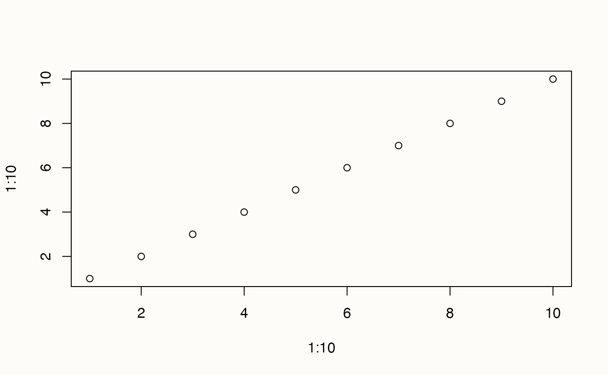

here::here("code", "_common.R") |>
source()
# Load packages
if (!requireNamespace("pacman")) install.packages("pacman")
pacman::p_load(tidyr)9 Programmazione
Introduzione
In questo capitolo esploreremo tre strumenti fondamentali per la scrittura di codice in R: le funzioni, le istruzioni condizionali e i cicli. Questi elementi costituiscono la base per sviluppare script flessibili, efficienti e riutilizzabili, essenziali per ogni programmatore o analista che utilizza R.
9.1 Funzioni
R offre un’ampia gamma di funzioni integrate per supportare l’analisi statistica, la manipolazione dei dati e la visualizzazione grafica, rendendolo uno strumento estremamente versatile per diverse esigenze.
Esempi di funzioni comuni includono:
# Sommare numeri
sum(1, 2, 3) # Restituisce la somma dei numeri
#> [1] 6# Creare un grafico semplice
plot(1:10, 1:10) # Crea un grafico a dispersione dei valori
In sostanza, una funzione è un blocco di codice progettato per svolgere un’operazione specifica. Puoi pensare a una funzione come a una “black box”: fornisci un input (i dati), la funzione elabora l’informazione attraverso le sue istruzioni e restituisce un output (il risultato). Questo approccio modulare semplifica il lavoro, permettendo di riutilizzare e combinare facilmente diverse operazioni.
9.1.1 Creare Funzioni Personalizzate
La creazione di funzioni personalizzate in R è uno strumento essenziale per migliorare la programmazione, soprattutto per gestire operazioni ripetitive o complesse. Le funzioni consentono di rendere il codice più leggibile, efficiente e riutilizzabile, promuovendo un approccio organizzato e chiaro alla risoluzione dei problemi.
9.1.1.1 Vantaggi delle Funzioni Personalizzate
L’uso di funzioni personalizzate offre numerosi benefici:
-
Chiarezza e leggibilità: Un nome descrittivo permette di comprendere immediatamente lo scopo della funzione, anche a distanza di tempo o per altri utenti che leggono il codice.
-
Manutenzione semplificata: Modificare il codice all’interno di una funzione aggiorna automaticamente tutte le sue occorrenze, riducendo il rischio di errori e semplificando il debugging.
-
Riduzione degli errori: Si evitano gli errori tipici del copia-e-incolla, come omissioni o incoerenze nei programmi complessi.
- Riutilizzabilità: Una funzione ben progettata può essere utilizzata in più contesti o progetti, risparmiando tempo e sforzi.
9.1.1.2 Quando Creare una Funzione?
Un buon criterio per decidere se creare una funzione è osservare se il medesimo blocco di codice viene copiato più volte. Se ti trovi a ripetere lo stesso codice più di due volte, probabilmente è il momento di creare una funzione. Questo aiuta a scrivere codice più pulito, scalabile e professionale, migliorando anche la sostenibilità del lavoro a lungo termine.
9.1.2 Sintassi di una Funzione
La struttura base di una funzione in R è la seguente:
nome_funzione <- function(argomenti) {
# Corpo della funzione
codice
return(risultato) # Facoltativo: restituisce il valore calcolato
}-
nome_funzione: Nome della funzione, scelto per descrivere chiaramente la sua finalità.
-
argomenti: Parametri necessari per eseguire le operazioni all’interno della funzione.
-
codice: Le istruzioni che definiscono il comportamento della funzione.
-
risultato: Il valore restituito dalla funzione. Se non si usareturn(), R restituisce l’ultimo valore calcolato.
Esempio 9.1 Immaginiamo di voler creare una funzione per sommare due numeri.
somma_due <- function(a, b) {
a + b # Restituisce la somma dei due numeri
}Per utilizzarla, basta richiamarla specificando i parametri:
somma_due(5, 3) # Restituisce 8Questo approccio aiuta a scrivere codice più leggibile e facile da gestire. Ad esempio, se in futuro volessi modificare il comportamento della somma (ad esempio, aggiungere un messaggio di log), basterà intervenire solo all’interno della funzione.
Esempio 9.2 Immaginiamo di avere un dataset con i punteggi di 10 individui su 3 subscale di un test psicometrico. L’obiettivo è:
- Creare una funzione per calcolare il punteggio totale di un individuo.
- Creare una funzione per trovare il massimo punteggio totale nel campione.
- Creare una funzione per individuare chi ha ottenuto il massimo punteggio.
Passo 1: Simulazione dei Dati. Simuliamo i punteggi di 10 individui su 3 subscale:
# Simulazione dei punteggi
set.seed(123)
punteggi <- data.frame(
individuo = paste("Individuo", 1:10),
subscale1 = sample(30:50, 10, replace = TRUE),
subscale2 = sample(40:60, 10, replace = TRUE),
subscale3 = sample(35:55, 10, replace = TRUE)
)
print(punteggi)
#> individuo subscale1 subscale2 subscale3
#> 1 Individuo 1 44 44 48
#> 2 Individuo 2 48 58 51
#> 3 Individuo 3 43 48 45
#> 4 Individuo 4 32 42 41
#> 5 Individuo 5 39 47 55
#> 6 Individuo 6 47 46 46
#> 7 Individuo 7 40 49 49
#> 8 Individuo 8 34 48 44
#> 9 Individuo 9 49 58 47
#> 10 Individuo 10 43 43 41La funzione sample() in R è utilizzata per estrarre casualmente un sottoinsieme di valori da un vettore. Nell’esempio sopra, sample() viene utilizzata per generare casualmente i punteggi delle subscale dei test psicometrici.
Nell’istruzione subscale1 <- sample(30:50, 10, replace = TRUE)
-
30:50: Rappresenta il vettore di numeri interi da cui vengono estratti i punteggi (valori possibili tra 30 e 50). -
10: Indica che vogliamo estrarre 10 valori. -
replace = TRUE: Consente che lo stesso valore possa essere estratto più volte (estrazione con ripetizione).
Passo 2: Creazione delle Funzioni.
-
Calcolo del punteggio totale per ogni individuo
Questa funzione somma i punteggi delle subscale di un individuo:calcola_totale <- function(subscale1, subscale2, subscale3) { return(subscale1 + subscale2 + subscale3) } -
Trovare il punteggio massimo nel campione
Questa funzione accetta un vettore di punteggi totali e restituisce il valore massimo: -
Individuare l’individuo con il punteggio massimo
Questa funzione accetta un data frame con i punteggi e restituisce il nome dell’individuo con il punteggio più alto:La funzione
which.max()restituisce l’indice della posizione in cui si trova il valore massimo in un vettore.
Passo 3: Applicazione delle Funzioni
-
Calcolo dei punteggi totali per ogni individuo
Applichiamo la funzione ai dati simulati:punteggi$punteggio_totale <- with( punteggi, calcola_totale(subscale1, subscale2, subscale3) ) print(punteggi) #> individuo subscale1 subscale2 subscale3 punteggio_totale #> 1 Individuo 1 44 44 48 136 #> 2 Individuo 2 48 58 51 157 #> 3 Individuo 3 43 48 45 136 #> 4 Individuo 4 32 42 41 115 #> 5 Individuo 5 39 47 55 141 #> 6 Individuo 6 47 46 46 139 #> 7 Individuo 7 40 49 49 138 #> 8 Individuo 8 34 48 44 126 #> 9 Individuo 9 49 58 47 154 #> 10 Individuo 10 43 43 41 127 -
Troviamo il punteggio massimo nel campione
massimo <- trova_massimo(punteggi$punteggio_totale) print(massimo) #> [1] 157 -
Troviamo chi ha il punteggio massimo
individuo_massimo <- trova_individuo_massimo(punteggi) print(individuo_massimo) #> [1] "Individuo 2"
9.1.3 Stile
È consigliato di usare nomi di funzioni chiari e descrittivi, preferibilmente verbi (es. compute_mean()). Inoltre, è importante mantenere una struttura leggibile, con spazi coerenti e indentazione.
9.2 Istruzioni Condizionali in R
Le istruzioni condizionali permettono di introdurre logica nel tuo codice. Ad esempio, l’operazione x * y si limita a moltiplicare i valori di x e y, senza alcuna logica aggiunta. Con le istruzioni condizionali, puoi dire al programma di eseguire diverse operazioni a seconda che una condizione sia vera (TRUE) o falsa (FALSE).
L’istruzione condizionale più comune in R è if. Può essere letta come: “Se la condizione è vera, esegui un’azione”. Con else, si estende la logica: “Se la condizione è vera, fai qualcosa; altrimenti fai qualcos’altro”.
La struttura generale è questa:
if (condizione) {
# Codice eseguito se la condizione è TRUE
} else {
# Codice eseguito se la condizione è FALSE
}Immagina questa situazione:
- “Se un partecipante al test psicologico riporta un punteggio elevato sulla scala di ansia (es. > 15), consigliagli un esercizio di rilassamento. Altrimenti, non è necessario.”
Vediamo come rappresentare questa situazione in R.
anxiety_score <- 18 # Punteggio riportato dal partecipante
if (anxiety_score > 15) {
exercise <- "rilassamento"
} else {
exercise <- "nessun esercizio"
}
exercise
#> [1] "rilassamento"Se il punteggio è maggiore di 15, il risultato sarà:
[1] "rilassamento"Se il punteggio è inferiore o uguale a 15, il risultato sarà:
[1] "nessun esercizio"
9.2.1 Uso di ifelse()
Un’alternativa più compatta a if e else è la funzione ifelse(), utile soprattutto per vettori. Ad esempio, supponiamo di avere i punteggi di ansia di un gruppo di partecipanti e vogliamo decidere se assegnare un esercizio di rilassamento a ciascuno:
Il risultato sarà:
exercises
#> [1] "nessun esercizio" "rilassamento" "nessun esercizio" "rilassamento"
#> [5] "nessun esercizio"9.2.2 Creare una Funzione con Istruzioni Condizionali
Le istruzioni condizionali possono essere racchiuse in una funzione per rendere il codice più flessibile e riutilizzabile. Ad esempio, supponiamo di voler personalizzare un feedback per un partecipante in base al punteggio ottenuto in un questionario:
feedback <- function(score) {
if (score > 15) {
"Consigliamo un esercizio di rilassamento."
} else if (score > 10) {
"Monitoriamo la situazione, ma non è necessario alcun intervento."
} else {
"Nessun intervento necessario."
}
}feedback(18)
#> [1] "Consigliamo un esercizio di rilassamento."feedback(12)
#> [1] "Monitoriamo la situazione, ma non è necessario alcun intervento."feedback(8)
#> [1] "Nessun intervento necessario."In conclusione, le istruzioni condizionali come if, else e ifelse() sono strumenti fondamentali per introdurre logica e controllo nel tuo codice. Puoi usarle per prendere decisioni, gestire errori e rendere il tuo codice più flessibile ed efficiente. Creare funzioni che incorporano queste istruzioni è un passo fondamentale per scrivere codice ordinato e riutilizzabile in contesti psicologici e non solo.
9.2.3 Combinare Operatori Logici in R
Finora abbiamo creato funzioni abbastanza semplici e mirate. Ora proviamo a realizzare una funzione leggermente più complessa. Immaginiamo di voler determinare se una persona ha avuto una buona giornata basandoci su due criteri:
-
Livello di stress: basso (
TRUE) o alto (FALSE). -
Livello di supporto sociale percepito: alto (
TRUE) o basso (FALSE).
Vogliamo creare una funzione che prenda questi due fattori e restituisca un messaggio che descrive come potrebbe essere stata la giornata della persona.
Ecco come possiamo costruire la funzione:
good_day <- function(low_stress, high_support) {
if (low_stress == TRUE && high_support == TRUE) {
"Giornata fantastica! Ti senti calmo e supportato."
} else if (low_stress == FALSE && high_support == TRUE) {
"Il supporto sociale ti aiuta a gestire lo stress elevato."
} else if (low_stress == TRUE && high_support == FALSE) {
"Nonostante lo stress sia basso, la mancanza di supporto sociale pesa."
} else if (low_stress == FALSE && high_support == FALSE) {
"Giornata difficile: stress elevato e poco supporto sociale."
}
}Esempi di utilizzo.
Caso 1: Stress basso e supporto sociale alto
good_day(low_stress = TRUE, high_support = TRUE)
#> [1] "Giornata fantastica! Ti senti calmo e supportato."Caso 2: Stress elevato e supporto sociale alto.
good_day(FALSE, TRUE)
#> [1] "Il supporto sociale ti aiuta a gestire lo stress elevato."Caso 3: Stress basso e supporto sociale basso.
good_day(TRUE, FALSE)
#> [1] "Nonostante lo stress sia basso, la mancanza di supporto sociale pesa."Caso 4: Stress elevato e supporto sociale basso.
good_day(FALSE, FALSE)
#> [1] "Giornata difficile: stress elevato e poco supporto sociale."La funzione considera tutte le combinazioni di stress e supporto sociale:
- Stress basso e supporto alto: giornata ideale.
- Stress elevato e supporto alto: il supporto aiuta a mitigare lo stress.
- Stress basso e supporto basso: la mancanza di supporto rovina una situazione potenzialmente buona.
- Stress elevato e supporto basso: la situazione peggiore.
Nell’esempio abbiamo usato i seguenti operatori logici:
-
&&(AND logico): Entrambe le condizioni devono essere vere. -
==(uguale a): Verifica se una variabile è vera o falsa.
Ad esempio, questa condizione:
if (low_stress == TRUE && high_support == TRUE)verifica se il livello di stress è basso e il supporto sociale è alto.
In conclusione, questa funzione dimostra come combinare condizioni logiche complesse utilizzando operatori logici come && (AND) e || (OR). Grazie a questi strumenti, possiamo gestire facilmente logiche più articolate, mantenendo il codice leggibile e funzionale.
9.2.4 Gli operatori Logici in R
Gli operatori logici sono essenziali per definire le condizioni nelle istruzioni if. Ecco una tabella riassuntiva con i principali operatori:
| Operatore | Descrizione tecnica | Significato | Esempio |
|---|---|---|---|
&& |
AND logico | Entrambe le condizioni devono essere vere | if(cond1 == test && cond2 == test) |
|| |
OR logico | Almeno una condizione deve essere vera | if(cond1 == test || cond2 == test) |
< |
Minore di | X è minore di Y | if(X < Y) |
> |
Maggiore di | X è maggiore di Y | if(X > Y) |
<= |
Minore o uguale a | X è minore o uguale a Y | if(X <= Y) |
>= |
Maggiore o uguale a | X è maggiore o uguale a Y | if(X >= Y) |
== |
Uguale a | X è uguale a Y | if(X == Y) |
!= |
Diverso da | X è diverso da Y | if(X != Y) |
9.3 Cicli in R
R è particolarmente efficace nell’eseguire attività ripetitive. Quando dobbiamo ripetere un’operazione più volte, possiamo utilizzare un ciclo. I cicli eseguono un insieme di istruzioni per un numero specifico di volte o fino a quando una determinata condizione non è soddisfatta.
In R esistono tre tipi principali di cicli:
-
Ciclo
for: ripete un’operazione per un numero definito di iterazioni. -
Ciclo
while: continua a eseguire le istruzioni fino a quando una condizione logica è soddisfatta. -
Ciclo
repeat: itera indefinitamente fino a quando non viene esplicitamente interrotto con un’istruzionebreak.
I cicli sono strumenti essenziali in tutti i linguaggi di programmazione, ma in R il loro utilizzo dovrebbe essere valutato attentamente, poiché spesso esistono alternative più efficienti come le funzioni della famiglia apply.
9.3.1 Il ciclo for
Il ciclo for è il più utilizzato per eseguire un’operazione un numero definito di volte. Ecco un esempio base:
for (i in 1:5) {
print(i)
}
#> [1] 1
#> [1] 2
#> [1] 3
#> [1] 4
#> [1] 5Come funziona?
- L’indice
iprende il primo valore della sequenza1:5(cioè 1). - Il corpo del ciclo, ovvero il codice tra
{ }, viene eseguito. - Al termine di ogni iterazione,
iassume il valore successivo nella sequenza, e il processo si ripete fino all’ultimo valore (5 in questo caso).
Aggiungere logica nel corpo del ciclo
Possiamo aggiungere operazioni all’interno del ciclo, come ad esempio sommare 1 a ogni valore:
for (i in 1:5) {
print(i + 1)
}
#> [1] 2
#> [1] 3
#> [1] 4
#> [1] 5
#> [1] 6
9.3.2 Il ciclo while
Il ciclo while continua a eseguire le istruzioni fino a quando una condizione logica è soddisfatta. Ecco un esempio:
i <- 0
while (i <= 4) {
i <- i + 1
print(i)
}
#> [1] 1
#> [1] 2
#> [1] 3
#> [1] 4
#> [1] 5Come funziona?
- La condizione logica (
i <= 4) viene verificata prima di ogni iterazione. - Se la condizione è vera, il ciclo esegue il codice tra
{ }. - Quando la condizione diventa falsa (
i > 4), il ciclo si interrompe.
9.3.3 Ciclo repeat
Il ciclo repeat esegue il codice indefinitamente, a meno che non venga interrotto con un’istruzione break:
i <- 0
repeat {
i <- i + 1
print(i)
if (i >= 5) {
break
}
}
#> [1] 1
#> [1] 2
#> [1] 3
#> [1] 4
#> [1] 5Quando usarlo?
Il ciclo repeat è raro e viene utilizzato solo in situazioni molto particolari. Nella maggior parte dei casi, for o while sono più adatti.
9.3.4 Evitare i cicli: la famiglia di funzioni apply
I cicli in R sono relativamente lenti, specialmente con dataset di grandi dimensioni. Quando possibile, è preferibile usare funzioni della famiglia apply per ottenere lo stesso risultato in modo più efficiente e con meno rischi di errore.
9.3.4.1 La funzione lapply()
lapply() esegue una funzione su ciascun elemento di una lista o vettore e restituisce una lista con i risultati.
Esempio:
lapply(0:4, function(a) {
a + 1
})
#> [[1]]
#> [1] 1
#>
#> [[2]]
#> [1] 2
#>
#> [[3]]
#> [1] 3
#>
#> [[4]]
#> [1] 4
#>
#> [[5]]
#> [1] 5
9.3.4.2 La funzione sapply()
lapply() restituisce una lista, ma se vuoi un vettore come output, usa sapply():
sapply(0:4, function(a) {
a + 1
})
#> [1] 1 2 3 4 59.3.5 Quando usare i cicli?
I cicli sono utili quando:
- Devi simulare modelli complessi (es. modelli ricorsivi).
- Hai bisogno di operazioni che dipendono dai risultati delle iterazioni precedenti.
In tutti gli altri casi, considera alternative come apply(), lapply() o funzioni simili per un codice più efficiente e meno soggetto a errori.
9.4 Linee Guida per Scrivere Codice
Di seguito trovi alcune linee guida per scrivere codice chiaro, conciso e riutilizzabile:
Evita di ripeterti: Segui il principio Don’t Repeat Yourself (DRY). Scrivi funzioni e utilizza funzioni come
map(per applicare un pezzo di codice iterativamente a tutti gli elementi di un oggetto) per evitare di copiare e incollare variazioni minime dello stesso codice in più parti del progetto.Segui uno stile coerente: Adotta una guida di stile per mantenere uniformità nel tuo codice. Per R, raccomandiamo la guida di stile del “tidyverse”, scritta da Hadley Wickham. Questa guida, derivata dalla Google R Style Guide, fornisce istruzioni dettagliate su sintassi del codice, nomi delle variabili, spaziature, indentazioni, commenti, convenzioni per scrivere funzioni, utilizzo delle pipe (metodo per concatenare funzioni), e altro ancora.
Commenta abbondantemente: Usa i commenti (ad esempio, con
#) per spiegare perché ogni parte del codice è necessaria e cosa fa. I commenti rendono il codice più leggibile e facilitano la manutenzione futura.Testa il tuo codice: Ogni volta che scrivi codice, verifica che funzioni come previsto. Puoi farlo scrivendo funzioni di test specifiche o controllando manualmente che l’output corrisponda alle aspettative. Abituati a pensare a eventuali edge cases (casi limite) in cui il tuo codice potrebbe non comportarsi come previsto.
Esegui una revisione del codice: Quando possibile, fai revisionare il tuo codice da un’altra persona per individuare errori e incoerenze. Se non hai nessuno a disposizione, puoi rivedere il tuo codice autonomamente: rileggendo con attenzione, è sorprendente il numero di errori che si possono individuare!
Seguendo queste linee guida, potrai scrivere codice più robusto, leggibile e facile da mantenere nel tempo.1
9.5 Riflessioni Conclusive
Scrivere funzioni è un passaggio essenziale per migliorare la leggibilità, l’efficienza e la riutilizzabilità del codice. Funzioni ben progettate semplificano le modifiche, riducono errori e rendono il lavoro più chiaro, sia per te stesso che per i collaboratori futuri. Se trovi che stai copiando e incollando codice più volte, è il momento di pensare a creare una funzione.
Le istruzioni condizionali, come if, else e ifelse(), sono fondamentali per introdurre logica e controllo nel codice. Permettono di gestire scenari diversi e prendere decisioni dinamiche, migliorando la flessibilità e l’efficienza dei tuoi script. Combinando queste istruzioni con operatori logici come && e ||, puoi affrontare situazioni complesse con un codice chiaro e leggibile.
I cicli sono potenti strumenti per eseguire operazioni ripetitive, ma in R il loro utilizzo dovrebbe essere limitato ai casi in cui non esistono alternative più efficienti. Le funzioni apply() e simili rappresentano spesso un’opzione migliore per manipolare dati in modo più rapido e leggibile.
Bibliografia
Irizarry, R. A. (2024). Introduction to Data Science: Data Wrangling and Visualization with R. CRC Press.